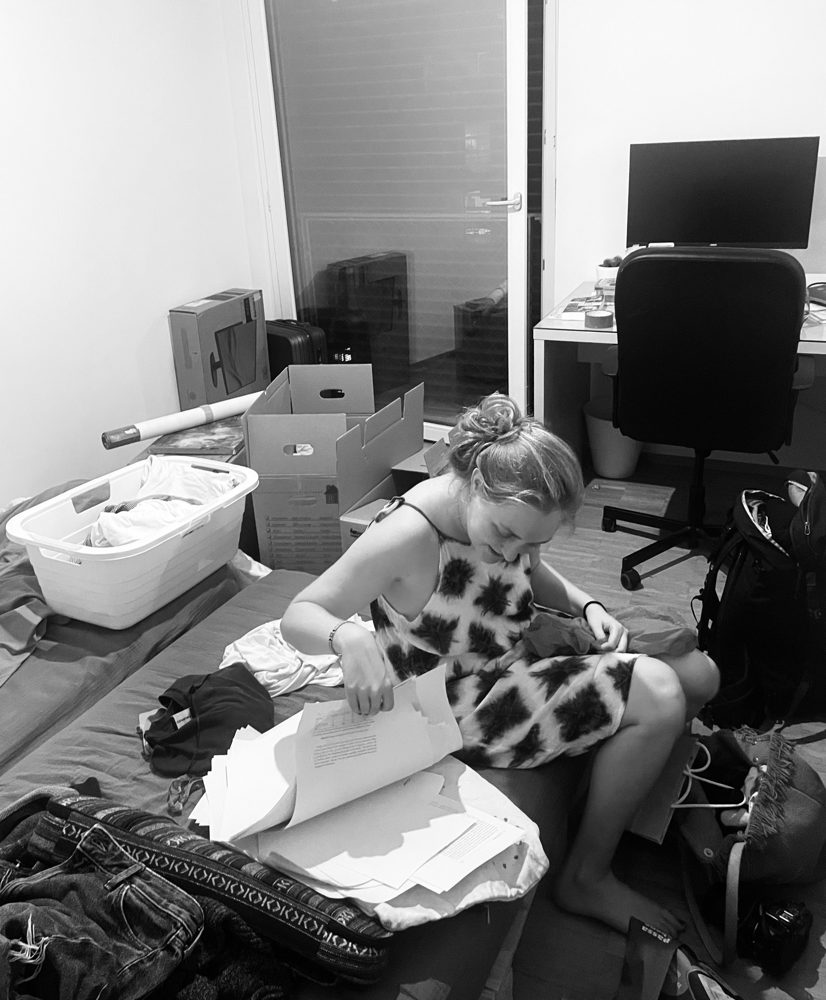

Tropennächte, Herbstblätter im Juli, Kampf um Ventilatoren: Plötzlich
spüren es auch die behüteten Bewohner*innen im Land der Banken und
Berge. Über Wochen raubt sie ihnen den Schlaf, drängt sie sich in
ihre Poren, an den Stammtisch, in die Schlagzeilen. Sie, die
Hitzewelle, die Erderwärmung. Oder eben: Die Krise.
Manche haben es kommen sehen. Manche versuchten, etwas daran zu
ändern. Manche versuchten es nicht nur, sondern machten es sich zur
Lebensaufgabe. Bekannt wurden sie als «Fridays for Future».
Weil wir lieber eine einzelne Person, statt eine ganze Bewegung ins
Rampenlicht stellen – sei es für den Personenkult oder persönliche
Projektions- und Angriffsfläche – drehte sich der Diskurs vor allem
um junge Frauen. Allen voran Greta. Und weil die Schweiz immer gerne
ein «Made of Switzerland» hat, auch um Menschen wie Loukina.
Vom Gymi in die Bewegung
Loukina war keine 17, als sie sich im letzten Gymi-Jahr der
Klimastreik-Bewegung anschloss. Im August 2019 organisierte sie mit
ihren Mitstreiter*innen eine internationale Klimakonferenz in
Lausanne, die 400 junge Klimaaktivist*innen aus 38 Ländern
zusammenbrachte –
«Smile for Future».
So wurden auch die Medien auf Loukina aufmerksam. Wenn es darum
ging, die offizielle Haltung der Fridays-for-Future-Bewegung in der
Schweiz einzuordnen, war sie diejenige, die man anrief.
2020 lud Klaus Schwab sie persönlich ein, am
WEF in Davos
teilzunehmen. Plötzlich stand sie in einer Reihe mit Greta Thunberg,
Luisa Neubauer, Vanessa Nakate und Isabelle Axelsson im
internationalen Rampenlicht.
Loukina Tille ist das Gesicht der Patagonia-Kampagne
«Facing extinction» – @patagoniazurich bedankte sich bei ihr
dafür, der Klima-Aktion eine Persönlichkeit zu geben. Ein
weiteres Beispiel dafür, wie ihr Aktivismus sie ungewollt zur
öffentlichen Figur machte.
Das einsame Rampenlicht
Im Rampenlicht zu stehen aufgrund des eigenen Aktivismus ist auch
einsam. Das Rampenlicht stellt einem als etwas Besonderes dar, und
unterstreicht damit gleichzeitig die Andersartigkeit. Dabei ist das
genau das, was Loukina nicht will. Sie will nicht bewundert werden.
Sie will nicht speziell sein. Im Gegenteil. In solchen Momenten
fühlt sie sich, als hätte sie versagt.
«Mein einziges Ziel, das ich habe, wenn ich etwas gegen die
Klimakrise unternehmen will, ist andere dazu zu bewegen, es auch zu
tun.» Und nicht zu sagen: «Wow, das ist so beeindruckend, was du
machst, das könnte ich niemals.»
Der Wechsel ins Datenlabor

Loukina Tille. Foto: privat.
Momentan hat sie sich aus dem Aktivismus zurückgezogen, da sie
endlich ihr Studium beenden wollte. Ihre Masterarbeit, die sie mit
der Bestnote abgeschlossen hatte, drehte sich aber auch um
Klimaaktivismus – nur diesmal nicht auf der Strasse, sondern im
Datensatz. Statt mit Transparenten und Sprechchören näherte sie sich
der Frage, die sie all die Jahre umgetrieben hatte, jetzt mit
Regressionsmodellen: Wann wirkt Widerstand tatsächlich? Wann bringt
er ein fossiles Projekt zu Fall, bevor es überhaupt in Betrieb geht?
Ihre Datengrundlage: der
EJAtlas
(Global Atlas of Environmental Justice) – eine frei zugängliche, weltweit von
Aktivist*innen und Forschenden gemeinsam gepflegte Datenbank, die
mittlerweile über 4500 Umweltkonflikte dokumentiert. Loukina
filterte daraus 626 Konflikte rund um Kohle, Öl und Gas in 99
Ländern heraus – von 1932 bis heute.
Um zu verstehen, warum diese Frage so dringlich ist, lohnt sich ein
Blick auf die Zahlen.
Der weltweite Energiehunger
Im letzten Jahrhundert ist der weltweite Verbrauch fossiler Energie
ungebremst gewachsen – Kohle, dann Öl, dann Gas, jede neue Quelle
kam zur vorherigen dazu. Rund 0 Prozent der energiebedingten
Treibhausgasemissionen stammen aus der Verbrennung fossiler
Brennstoffe (Statistical Review of World Energy 2025). Im Kern ist
die Klimakrise deshalb vor allem eines: ein Problem fossiler
Brennstoffe. Und wenn die Erderwärmung begrenzt werden soll, führt
kein Weg daran vorbei, dass genau diese Brennstoffe im Boden
bleiben.
Doch fossile Energieträger bleiben nicht von selbst unter der Erde.
Genau hier setzt Loukinas Forschung an: Sie untersucht, unter
welchen Bedingungen dieser lokale Widerstand tatsächlich erfolgreich
ist – wann ein Kohlebergwerk, eine Pipeline, ein Bohrprojekt
tatsächlich gestoppt wird, bevor es noch mehr CO2 in die Atmosphäre
bringt.
Quelle: Energy Institute – Statistical Review of World Energy
(2026); Smil (2017), Datenaufbereitung: Our World in Data.
Was wirklich zählt
Ihr Fazit ist so nüchtern wie hoffnungsvoll zugleich.
0 Konflikte,
0 Länder, über fast
neun Jahrzehnte – und am Ende zwei Faktoren,
die wirklich zählen: Breite und Vielfalt. Widerstand ist dann am
erfolgreichsten, wenn lokale Gemeinschaften sich nicht allein
durchschlagen, sondern in breite Bündnisse eingebettet sind. Wenn
sie nicht auf eine einzige Taktik setzen, sondern gleichzeitig auf
mehreren Ebenen Druck aufbauen – rechtlich, politisch,
wirtschaftlich, öffentlich. Wer an allen vier Strängen zieht,
verdoppelt seine Chancen auf einen echten Baustopp.
Auch was nicht zählt, überrascht: Internationale Unterstützung
allein bringt wenig. Oft kommt sie erst, wenn ein Konflikt ohnehin
schon zu gross und zu verfahren ist, um noch gewonnen zu werden.
Auch die Originalität in der Protestform, so einfallsreich sie auch
sein mag, verändert für sich genommen wenig. Was zählt, ist nicht
die einzelne, spektakuläre Aktion, sondern das Zusammenspiel: viele
Verbündete, viele Mittel, gleichzeitig eingesetzt.
Diese Erkenntnisse nimmt Loukina mit. Zurück im Aktivismus ist sie
noch nicht – aber in ihr tut sich gerade viel, wie sie sich in
Zukunft mobilisieren will.
Die Zukunft wird, was wir daraus machen.
Weiterführende Literatur
Zwei Bücher, an denen Loukina Tille mitgeschrieben hat:
David Fopp, Isabelle Axelsson, Loukina Tille:
«The Youth Climate Uprising. From the School Strike
Movement to an Ecophilosophy of Democracy»,
transcript Verlag, 2024. –
Zum Buch
David Fopp, Isabelle Axelsson, Loukina Tille:
«Gemeinsam für die Zukunft – Fridays For Future und
Scientists For Future. Vom Stockholmer Schulstreik zur weltweiten
Klimabewegung», transcript Verlag, 2021. –
Zum Buch
Mehr entdecken
Weitere Beiträge und journalistische Projekte von Nuria Piller
werden hier nach und nach ergänzt.